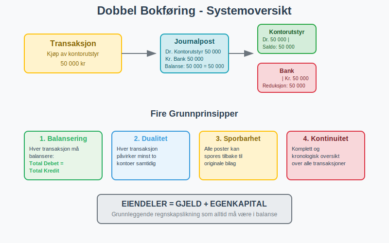
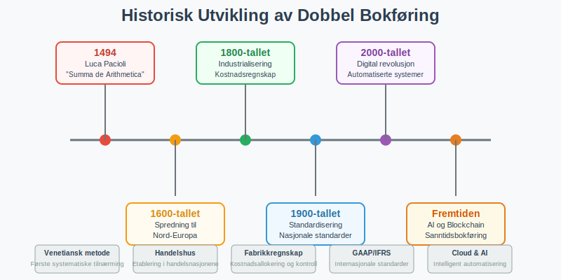
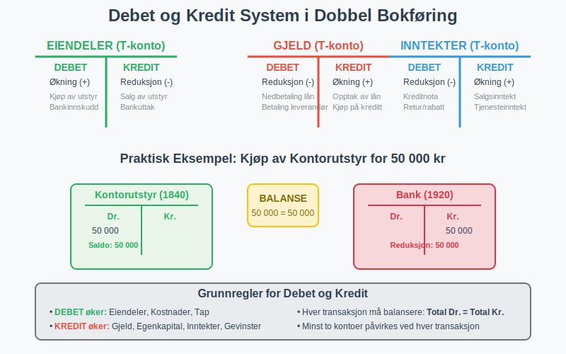
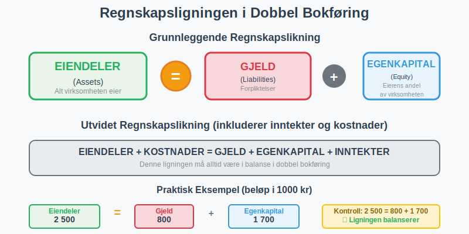
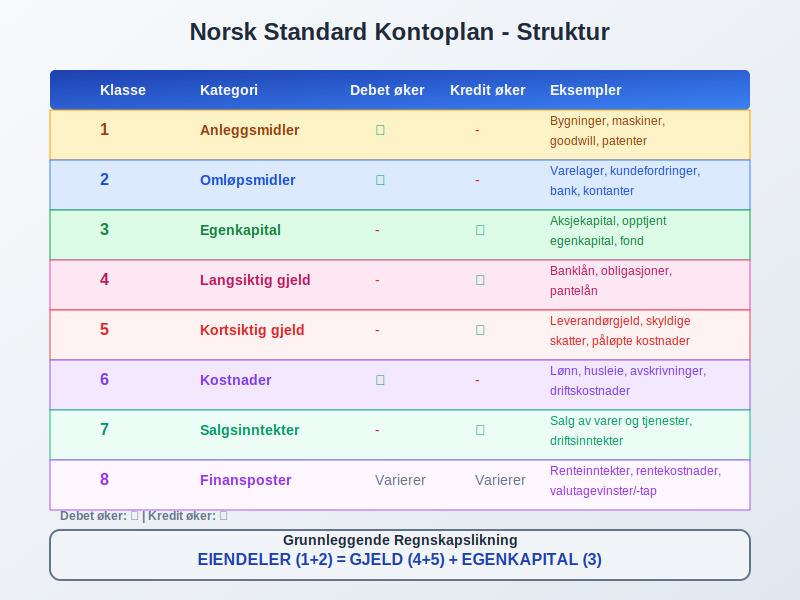
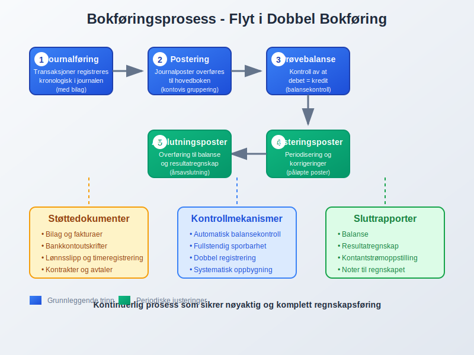
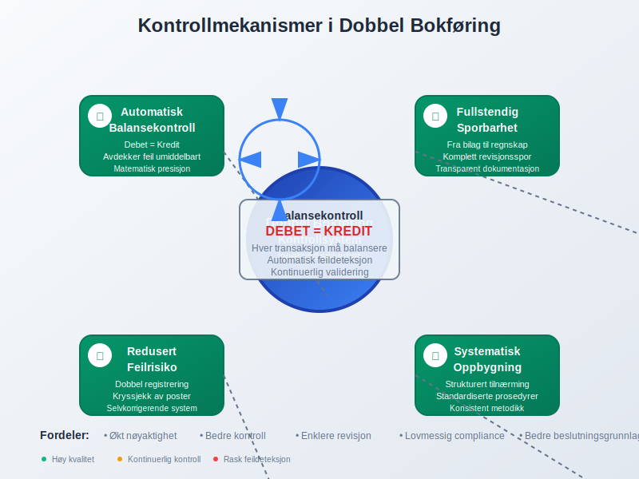
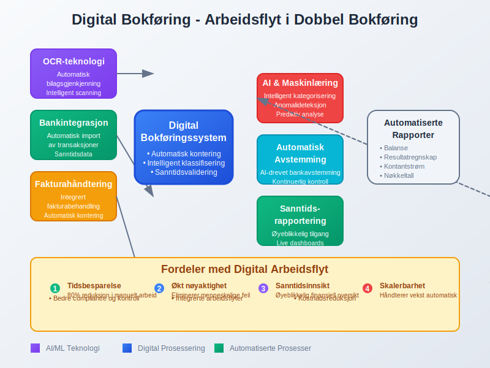
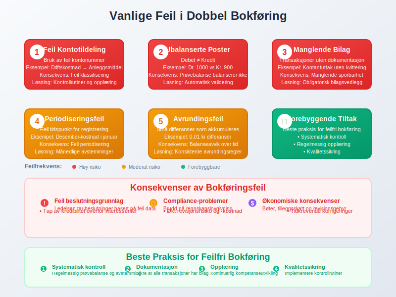
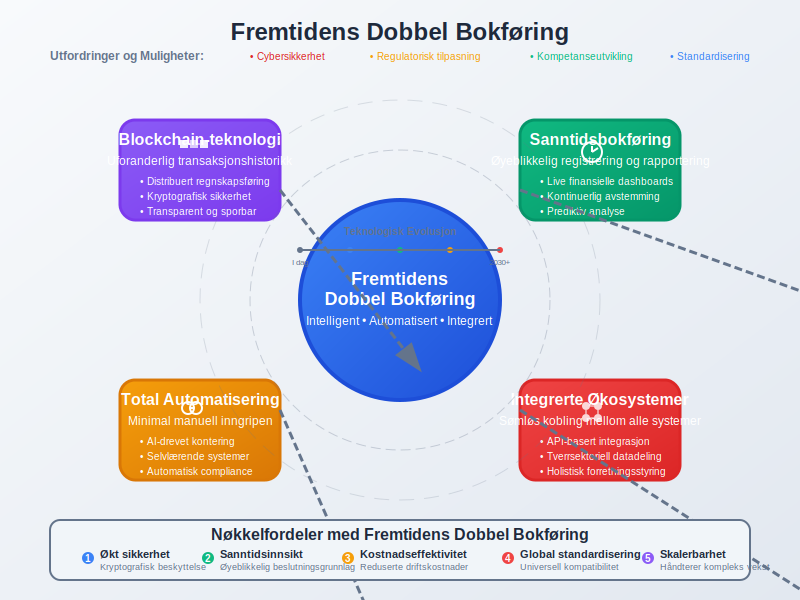

Dobbel bokføring er det fundamentale regnskapssystemet som danner grunnlaget for moderne bokføring og regnskap verden over. Dette systemet, som har sine røtter tilbake til 1400-tallet, sikrer at alle økonomiske transaksjoner registreres på en måte som opprettholder den grunnleggende regnskapsligningen og gir fullstendig sporbarhet.
Hva er Dobbel Bokføring?
Dobbel bokføring, også kalt dobbelt bokføringssystem, er en regnskapsmetode hvor hver økonomisk transaksjon registreres med minst to poster som påvirker forskjellige kontoer. Det grunnleggende prinsippet er at for hver debet-post må det være en tilsvarende kredit-post, slik at den totale summen alltid balanserer.

Grunnleggende Prinsipper
De fire grunnpilarene i dobbel bokføring:
- Balansering: Hver transaksjon må balansere - total debet = total kredit
- Dualitet: Hver transaksjon påvirker minst to kontoer
- Sporbarhet: Alle poster kan spores tilbake til originale bilag
- Kontinuitet: Systemet gir en komplett og kronologisk oversikt over alle transaksjoner
Historisk Bakgrunn og Utvikling
Fra Luca Pacioli til Moderne Systemer
Dobbel bokføring ble først systematisk beskrevet av den italienske munken Luca Pacioli i 1494 i hans verk “Summa de Arithmetica”. Hans metode, kjent som den “venetianske metoden”, la grunnlaget for moderne regnskapsprinsipper.

Viktige milepæler:
| År | Hendelse | Betydning |
|---|---|---|
| 1494 | Paciolis “Summa de Arithmetica” | Første systematiske beskrivelse |
| 1600-tallet | Spredning til Nord-Europa | Etablering i handelsnasjonene |
| 1800-tallet | Industrialiseringens krav | Utvikling av kostnadsregnskap |
| 1900-tallet | Standardisering | Nasjonale regnskapsstandarder |
| 2000-tallet | Digital revolusjon | Automatiserte bokføringssystemer |
Debet og Kredit - Systemets Hjerte
Forståelse av Debet og Kredit
I dobbel bokføring har debet og kredit spesifikke betydninger som avhenger av kontotypen:

Debet (Dr.) øker:
- Anleggsmidler
- Omløpsmidler
- Kostnader og utgifter
- Tap
Kredit (Kr.) øker:
- Egenkapital
- Gjeld (både lang- og kortsiktig)
- Inntekter
- Gevinster
Praktiske Eksempler på Dobbel Bokføring
Eksempel 1: Kjøp av kontorutstyr for 50 000 kr
| Konto | Debet | Kredit |
|---|---|---|
| Kontorutstyr (konto 1840) | 50 000 | |
| Bank (konto 1920) | 50 000 |
Eksempel 2: Salg av varer for 100 000 kr + 25% MVA
| Konto | Debet | Kredit |
|---|---|---|
| Kundefordringer (konto 1500) | 125 000 | |
| Salgsinntekt (konto 3000) | 100 000 | |
| Utgående MVA (konto 2700) | 25 000 |
Eksempel 3: Betaling av lønn 200 000 kr
| Konto | Debet | Kredit |
|---|---|---|
| Lønnskostnad (konto 5000) | 200 000 | |
| Bank (konto 1920) | 200 000 |
Regnskapsligningen og Balansering
Den Grunnleggende Regnskapsligningen
Dobbel bokføring bygger på den fundamentale regnskapsligningen:
EIENDELER = GJELD + EGENKAPITAL
Denne ligningen må alltid være i balanse, og hver transaksjon må opprettholde denne balansen.

Utvidet Regnskapsligningen
For å inkludere inntekter og kostnader:
EIENDELER + KOSTNADER = GJELD + EGENKAPITAL + INNTEKTER
Balansekontroll og Prøvebalanse
En prøvebalanse er et verktøy som sikrer at alle debetposter er lik alle kreditposter:
| Kontotype | Debet | Kredit |
|---|---|---|
| Eiendeler | 2 500 000 | |
| Gjeld | 800 000 | |
| Egenkapital | 1 200 000 | |
| Inntekter | 1 500 000 | |
| Kostnader | 1 000 000 | |
| TOTALT | 3 500 000 | 3 500 000 |
Kontoplaner og Kontoklassifisering
Norsk Standard Kontoplan
I Norge følger de fleste virksomheter den standardiserte kontoplanen som er tilpasset bokføringsloven. En velorganisert kontoplan er fundamentet for effektiv dobbel bokføring:

Detaljert kontoklasseoversikt:
| Klasse | Kategori | Debet øker | Kredit øker | Eksempler |
|---|---|---|---|---|
| 1 | Anleggsmidler | ✓ | Bygninger, maskiner, goodwill | |
| 2 | Omløpsmidler | ✓ | Varelager, kundefordringer, bank | |
| 3 | Egenkapital | ✓ | Aksjekapital, opptjent egenkapital | |
| 4 | Langsiktig gjeld | ✓ | Banklån, obligasjoner | |
| 5 | Kortsiktig gjeld | ✓ | Leverandørgjeld, skyldige skatter | |
| 6 | Kostnader | ✓ | Lønn, husleie, avskrivninger | |
| 7 | Salgsinntekter | ✓ | Salg av varer og tjenester | |
| 8 | Finansposter | Varierer | Varierer | Renteinntekter, rentekostnader |
Praktisk Implementering av Dobbel Bokføring
Bokføringsjournal og Hovedbok
Bokføringsprosessen følger disse trinnene:
- Journalføring: Transaksjoner registreres kronologisk i journalen
- Postering: Journalposter overføres til hovedboken
- Prøvebalanse: Kontroll av at debet = kredit
- Justeringsposter: Periodisering og korrigeringer
- Avslutningsposter: Overføring til balanse og resultatregnskap

Periodisering og Justeringsposter
Viktige justeringsposter i dobbel bokføring:
- Påløpte kostnader: Kostnader som er pådratt men ikke betalt
- Forskuddsbetalte kostnader: Kostnader betalt på forhånd
- Påløpte inntekter: Inntekter opptjent men ikke mottatt
- Utsatte inntekter: Inntekter mottatt på forhånd
Eksempel på periodisering - forskuddsbetalt forsikring:
| Transaksjon | Konto | Debet | Kredit |
|---|---|---|---|
| Betaling av årsforsikring | Forskuddsbetalt forsikring | 12 000 | |
| Bank | 12 000 | ||
| Månedlig periodisering | Forsikringskostnad | 1 000 | |
| Forskuddsbetalt forsikring | 1 000 |
Fordeler med Dobbel Bokføring
Kontroll og Nøyaktighet
Innebygde kontrollmekanismer:
- Automatisk balansekontroll: Systemet avdekker feil umiddelbart
- Fullstendig sporbarhet: Alle transaksjoner kan følges fra start til slutt
- Redusert feilrisiko: Dobbel registrering reduserer sannsynligheten for feil
- Systematisk oppbygning: Strukturert tilnærming til regnskapsføring

Informasjonsverdi og Rapportering
Omfattende finansiell informasjon:
- Detaljert innsikt: Fullstendig oversikt over virksomhetens økonomiske stilling
- Sammenlignbarhet: Standardisert format gjør sammenligning mulig
- Beslutningsgrunnlag: Solid fundament for økonomiske beslutninger
- Lovmessig compliance: Oppfyller krav i bokføringsregler
Analyse og Nøkkeltall
Dobbel bokføring muliggjør beregning av viktige finansielle nøkkeltall:
| Nøkkeltall | Formel | Formål |
|---|---|---|
| Arbeidskapital | Omløpsmidler - Kortsiktig gjeld | Likviditetsvurdering |
| Egenkapitalandel | Egenkapital / Total kapital × 100% | Soliditetsmåling |
| Dekningsgrad | Omløpsmidler / Kortsiktig gjeld | Betalingsevne |
| Totalrentabilitet | Resultat / Total kapital × 100% | Lønnsomhetsmåling |
Moderne Digitale Løsninger
Automatisering og Integrasjon
Dagens bokføringssystemer tilbyr:
- Automatisk bilagsgjenkjenning: OCR-teknologi for bilagsregistrering
- Bankintegrasjon: Automatisk import av banktransaksjoner
- Fakturahåndtering: Integrert faktura-behandling
- Sanntidsrapportering: Øyeblikkelig tilgang til finansielle rapporter

Kunstig Intelligens og Maskinlæring
Fremtidens bokføring inkluderer:
- Intelligent kategorisering: Automatisk kontotildeling basert på historiske data
- Anomalideteksjon: Identifisering av uvanlige transaksjoner
- Prediktiv analyse: Prognoser basert på historiske mønstre
- Automatisk avstemming: AI-drevet bankavstemming
Vanlige Feil og Hvordan Unngå Dem
Typiske Feilkilder
De mest vanlige feilene i dobbel bokføring:
- Feil kontering: Bruk av feil kontonummer
- Ubalanserte poster: Debet ≠ kredit
- Manglende bilag: Transaksjoner uten dokumentasjon
- Periodiseringsfeil: Feil tidspunkt for registrering
- Avrundingsfeil: Små differanser som akkumuleres

Forebyggende Tiltak
Beste praksis for feilfri bokføring:
- Systematisk kontroll: Regelmessig prøvebalanse og avstemming
- Dokumentasjon: Sikre at alle transaksjoner har tilhørende bilag
- Opplæring: Kontinuerlig kompetanseutvikling
- Kvalitetssikring: Implementere kontrollrutiner og godkjenningsprosesser
Dobbel Bokføring vs. Enkel Bokføring
Sammenligning av Systemer
| Aspekt | Dobbel Bokføring | Enkel Bokføring |
|---|---|---|
| Kompleksitet | Høy, men mer nøyaktig | Enkel, men begrenset |
| Kontroll | Innebygd balansekontroll | Ingen automatisk kontroll |
| Informasjonsverdi | Omfattende finansiell innsikt | Begrenset oversikt |
| Lovkrav | Påkrevd for de fleste virksomheter | Kun for små enkeltpersonforetak |
| Feildeteksjon | Automatisk identifisering | Manuell kontroll nødvendig |
| Rapportering | Fullstendige finansielle rapporter | Grunnleggende inn/ut-oversikt |
Når Velge Hvilket System?
Dobbel bokføring anbefales for:
- Alle aksjeselskap (lovpålagt)
- Virksomheter med omsetning over 5 MNOK
- Bedrifter som ønsker detaljert økonomisk styring
- Virksomheter med komplekse transaksjoner
Enkel bokføring kan brukes av:
- Små enkeltpersonforetak under omsetningsgrensen
- Virksomheter med svært enkle økonomiske forhold
Internasjonale Standarder og Harmonisering
IFRS og Dobbel Bokføring
International Financial Reporting Standards (IFRS) bygger på prinsippene fra dobbel bokføring og sikrer global sammenlignbarhet:
- Konsistente prinsipper: Samme grunnleggende logikk verden over
- Transparens: Klar og sammenlignbar rapportering
- Kvalitetssikring: Høye standarder for finansiell rapportering
Norske Tilpasninger
Norge har implementert IFRS med nasjonale tilpasninger som reflekterer:
- Norsk lovgivning: Tilpasning til bokføringsloven
- Skattemessige hensyn: Integrasjon med norsk skatterett
- Kulturelle faktorer: Norske forretningstradisjoner og praksis
Fremtiden for Dobbel Bokføring
Teknologiske Trender
Utviklingen går mot:
- Blockchain-teknologi: Uforanderlig transaksjonshistorikk
- Sanntidsbokføring: Øyeblikkelig registrering og rapportering
- Automatisering: Minimal manuell inngripen
- Integrerte økosystemer: Sømløs kobling mellom alle forretningssystemer

Utfordringer og Muligheter
Viktige utviklingsområder:
- Cybersikkerhet: Beskyttelse av sensitive finansielle data
- Regulatorisk tilpasning: Oppdatering av lover og regler
- Kompetanseutvikling: Opplæring i nye teknologier
- Standardisering: Harmonisering av digitale formater
Konklusjon
Dobbel bokføring forblir det ubestridte fundamentet for moderne regnskapsføring og finansiell rapportering. Dette systemet, som har utviklet seg over mer enn 500 år, kombinerer matematisk presisjon med praktisk anvendelighet for å gi virksomheter den kontroll og innsikt de trenger for å lykkes.
Nøkkelpunkter å huske:
- Balansering er alt: Hver transaksjon må balansere mellom debet og kredit
- Systematisk tilnærming: Følg etablerte prosedyrer og kontrollrutiner
- Kontinuerlig læring: Hold deg oppdatert på nye teknologier og regelverk
- Kvalitetsfokus: Prioriter nøyaktighet og fullstendighet i alle registreringer
Ved å mestre prinsippene for dobbel bokføring legger du grunnlaget for solid økonomisk styring og overholdelse av norske bokføringsregler. Dette systemet vil fortsette å være relevant selv når teknologien utvikler seg, fordi de grunnleggende prinsippene for økonomisk balanse og sporbarhet forblir uforandret.
For virksomheter som ønsker å implementere eller forbedre sitt dobbelte bokføringssystem, anbefales det å arbeide med kvalifiserte regnskapsførere og investere i moderne, integrerte bokføringssystemer som automatiserer rutineoppgaver samtidig som de opprettholder de strenge kravene til nøyaktighet og kontroll som kjennetegner dobbel bokføring.